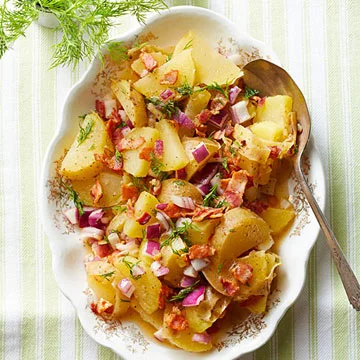

Bavarian Potato Salad

Description
The Bavarian Potato Salad is a classic german dish
known in every traditional german household.
It has been a staple dish for over 300 years,
originating from times when potatoes and salad
were the only food widely grown and available in
Germany. At it's most basic form, it usually
consists of potatoes, gherkins and red onions coated
in a blend of sour cream and gherkin juice- although it
is up for hotly contested depending where in Germany you come from.
Ingredients
- New Potatoes (500g)
- Red Onions x 2
- Gherkins (500g)
- Sour Cream (600ml)
- Gherkin Juice (50ml)
- Salt (5 Tbsp)
- Thyme or herbs of your choice (optional)
- Bratwurst (500g) (optional)
Steps
- Firstly, the new potatoes should be put on a
boil for around 30 minutes on gas mark 5 until they are
fluffy but too hard to mash.
- Whilst the potatoes are cooking, finely dice the two red onions
and chop the gherkins into thin slices.
- (Optional)Grill Bratwurst until fully cooked for 15 minutes
at gas mark 5. Next, thinly slice them at about the same
size as the gherkins.
- Prepare a coating by simply mixing the sour cream
and gherkin juice. It should be slightly less
consistent then full fat yoghurt.
- Next, drain the potatoes using a colander, and mix
the potatoes, red onions, gherkins, and bratwurst
(optional)together.
- Add in the coating prepared earlier and mix
thoroughly.
- Add thyme, or herbs of your choice such
as rosemary or chives over the top. Now,
the potato salad is complete.